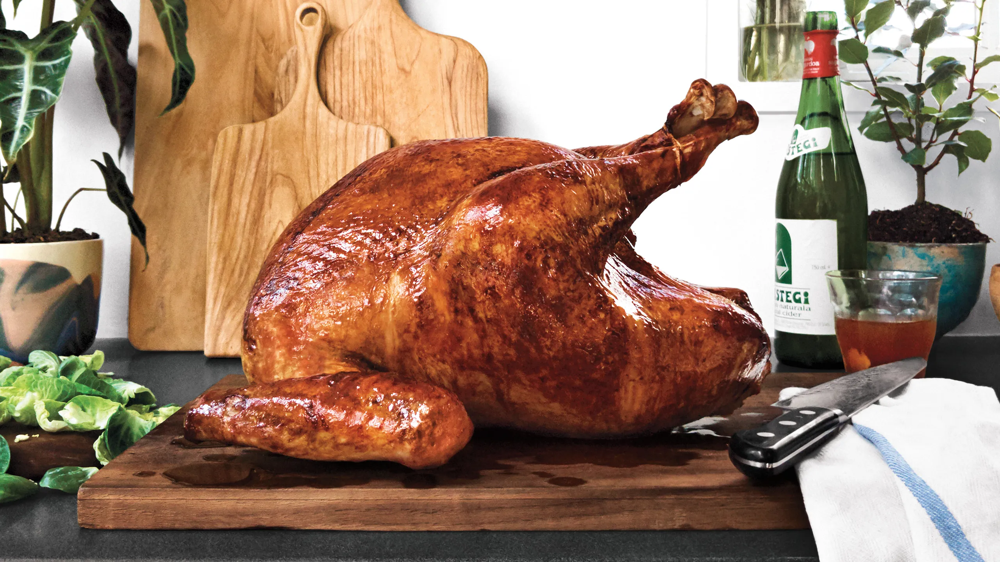

Thanksgiving Turkey

Description
Roast turkey is a quintessential dish often associated with festive occasions, particularly Thanksgiving in the United States. This bird is typically seasoned with a blend of herbs and spices, then slow-cooked to achieve a golden-brown skin that is both crispy and flavorful. The meat is succulent and juicy, often enhanced by brining or marinating prior to roasting, which infuses it with moisture and flavor. Served with traditional accompaniments like stuffing, cranberry sauce, and gravy, roast turkey embodies the spirit of celebration and togetherness.
Beyond its delicious taste, roast turkey is celebrated for its versatility. Leftover turkey can be transformed into a variety of dishes, from sandwiches to soups, ensuring that nothing goes to waste. Additionally, turkey is a lean protein option, making it a healthier choice compared to some other holiday meats. Whether carved at the table or enjoyed in creative recipes later, roast turkey stands as a symbol of abundance and hospitality, drawing families and friends together in shared meals and cherished memories.
Ingredients
- 1 (14 to 16 pound) frozen young turkey
For the Brine:
- 1 cup kosher salt
- 1/2 cup light brown sugar
- 1 gallon vegetable stock
- 1 tablespoon black peppercorns
- 1 1/2 teaspoons chopped candied ginger
- 1 gallon heavily iced water
For the Aromatics:
- 1 red apple, sliced
- 1/2 onion, sliced
- 1 cinnamon stick
- 1 cup water
- 4 sprigs rosemary
- 6 leaves sage
- Canola oil
Steps
- Two to three days before roasting: Begin thawing the turkey in the refrigerator or in a cooler kept at 38 degrees F.
- Combine the vegetable stock, salt, brown sugar, peppercorns, allspice berries, and candied ginger in a large stockpot over medium-high heat. Stir occasionally to dissolve solids and bring to a boil. Then remove the brine from the heat, cool to room temperature, and refrigerate.
- The night before or early on the day you'd like to eat: Combine the brine, water and ice in the 5-gallon bucket. Place the thawed turkey (with innards removed) breast side down in brine. If necessary, weigh down the bird to ensure it is fully immersed, cover, and refrigerate or set in cool area for 8 to 16 hours, turning the bird once half way through brining.
- Preheat the oven to 500 degrees F. Remove the bird from brine and rinse inside and out with cold water. Discard the brine.
- Place the bird on roasting rack inside a half sheet pan and pat dry with paper towels.
- Combine the apple, onion, cinnamon stick, and 1 cup of water in a microwave safe dish and microwave on high for 5 minutes. Add steeped aromatics to the turkey's cavity along with the rosemary and sage. Tuck the wings underneath the bird and coat the skin liberally with canola oil.
- Roast the turkey on lowest level of the oven at 500 degrees F for 30 minutes. Insert a probe thermometer into thickest part of the breast and reduce the oven temperature to 350 degrees F. Set the thermometer alarm (if available) to 161 degrees F. A 14 to 16 pound bird should require a total of 2 to 2 1/2 hours of roasting. Let the turkey rest, loosely covered with foil or a large mixing bowl for 15 minutes before carving.